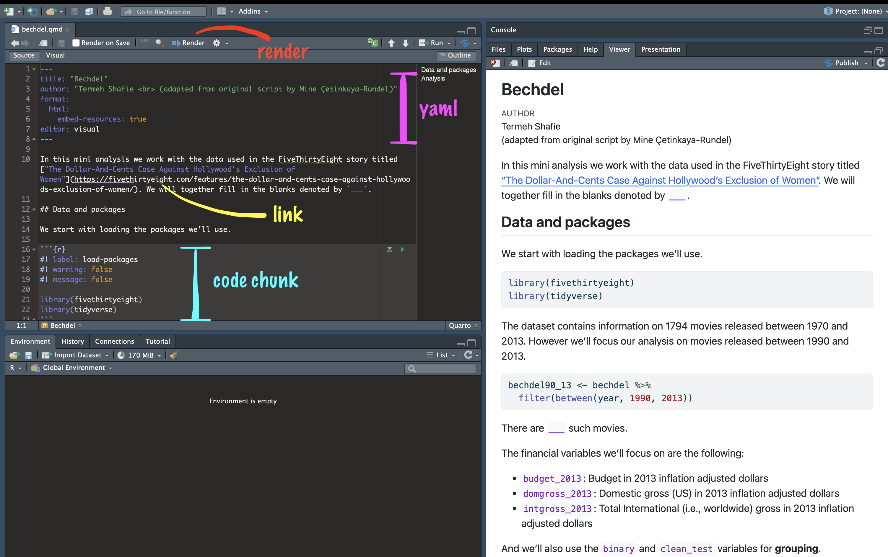
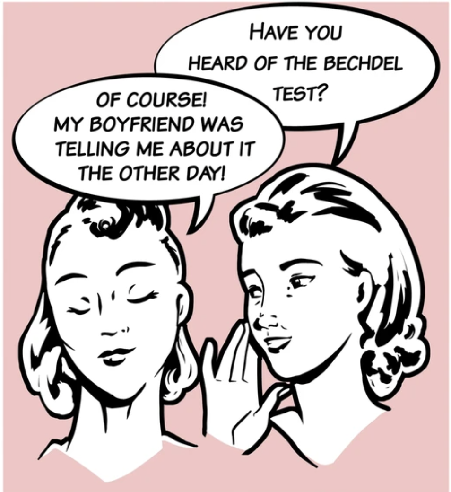

Introduction
Meet the toolkit
layout: true
Data science
.pull-left-wide[ - Data science is an exciting discipline that allows you to turn raw data into understanding, insight, and knowledge.
We’re going to learn to do this in a
tidyway – more on that later!This is a course on introduction to data science, with an emphasis on statistical thinking. ]
class: middle
Software


class: middle
Data science life cycle


.pull-left[

] .pull-right[
]
.pull-left[
] .pull-right[
# A tibble: 5 × 2
date season
<chr> <chr>
1 23 January 2017 winter
2 4 March 2017 spring
3 14 June 2017 summer
4 1 September 2017 fall
5 ... ... ]


.pull-left[ ### .pink[Doing data science] - .pink[Programming:] - .pink[R] - .pink[RStudio] - .pinktidyverse - .pink[R Markdown]]
Learning goals
By the end of the course, you will be able to…
–
- gain insight from data
| - gain insight from data, reproducibly |
|---|
| - gain insight from data, reproducibly, using modern programming tools and techniques |
- gain insight from data, reproducibly and collaboratively, using modern programming tools and techniques
| - gain insight from data, reproducibly (with literate programming and version control) and collaboratively, using modern programming tools and techniques |
class: middle
Reproducible data analysis
Reproducibility checklist
.question[ What does it mean for a data analysis to be “reproducible”?]
–
Near-term goals:
- Are the tables and figures reproducible from the code and data?
- Does the code actually do what you think it does?
- In addition to what was done, is it clear why it was done?
Long-term goals:
- Can the code be used for other data?
- Can you extend the code to do other things?
Toolkit for reproducibility
- Scriptability \(\rightarrow\) R
- Literate programming (code, narrative, output in one place) \(\rightarrow\) R Markdown
- Version control \(\rightarrow\) Git / GitHub
class: middle
R and RStudio
R and RStudio
.pull-left[

- R is an open-source statistical programming language
- R is also an environment for statistical computing and graphics
- It’s easily extensible with packages ] .pull-right[

- RStudio is a convenient interface for R called an IDE (integrated development environment), e.g. “I write R code in the RStudio IDE”
- RStudio is not a requirement for programming with R, but it’s very commonly used by R programmers and data scientists ]
R packages
Packages are the fundamental units of reproducible R code. They include reusable R functions, the documentation that describes how to use them, and sample data1
As of September 2020, there are over 16,000 R packages available on CRAN (the Comprehensive R Archive Network)2
We’re going to work with a small (but important) subset of these!
.footnote[ 1 Wickham and Bryan, R Packages.
2 CRAN contributed packages. ]
A short list (for now) of R essentials
- Functions are (most often) verbs, followed by what they will be applied to in parentheses:
do_this(to_this)
do_that(to_this, to_that, with_those)–
- Packages are installed with the
install.packagesfunction and loaded with thelibraryfunction, once per session:
install.packages("package_name")
library(package_name)R essentials (continued)
- Columns (variables) in data frames are accessed with
$:
.small[
dataframe$var_name]
–
- Object documentation can be accessed with
?
?meantidyverse
.pull-left[

]
.pull-right[ .center[.large[ tidyverse.org]]
- The tidyverse is an opinionated collection of R packages designed for data science
- All packages share an underlying philosophy and a common grammar ]
rmarkdown
.pull-left[ .center[.large[ rmarkdown.rstudio.com]]
- rmarkdown and the various packages that support it enable R users to write their code and prose in reproducible computational documents
- We will generally refer to R Markdown documents (with
.Rmdextension), e.g. “Do this in your R Markdown document” and rarely discuss loading the rmarkdown package ]
.pull-right[

]
Quarto
.center[.large[ https://quarto.org/]] .center[

]
- An open-source scientific and technical publishing system
- Create dynamic content with Python, R, Julia, and Observable.
- Publish reproducible, production quality articles, presentations, dashboards, websites, blogs, and books in HTML, PDF, MS Word, ePub, and more.
class: middle
R Markdown and Quarto
R Markdown and Quarto
- Fully reproducible reports – each time you knit the analysis is ran from the beginning
- Simple markdown syntax for text
- Code goes in chunks, defined by three backticks, narrative goes outside of chunks
Tour: Quarto

Environments
.tip[ The environment of your R Markdown/Quarto document is separate from the Console!]
Remember this, and expect it to bite you a few times as you’re learning to work with them!
How will we use R Markdown and Quarto?
- Every assignment / report / project / etc. is an R Markdown document
- You’ll always have a template R Markdown document to start with
What’s with all the hexes?

.footnote[ Mitchell O’Hara-Wild, useR! 2018 feature wall]
.your-turn[ .light-blue[.hand[Practical:]] Bechdel + Quarto - The Bechdel test asks whether a work of fiction features at least two women who talk to each other about something other than a man, and there must be two women named characters.

]